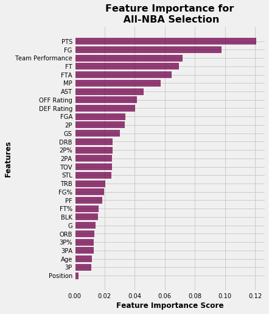

| Position | Player | Logistic Regression Points | Random Forest Points | GAM Points | Neural Nets Points | KNN Points | Total Points |
|---|---|---|---|---|---|---|---|
| Guard | James Harden | 5 | 5 | 10 | |||
| Luka Dončić | 5 | 5 | 10 | ||||
| Damian Lillard | 3 | 1 | 4 | ||||
| Kyrie Irving | 3 | 0.5 | 3.5 | ||||
| Trae Young | 1 | 3 | 4 | ||||
| Russell Westbrook | 1 | 3 | 4 | ||||
| Ben Simmons | 0.5 | 0 | 0.5 | ||||
| Chris Paul | 0.5 | 0 | 0.5 | ||||
| Bradley Beal | 0 | 1 | 1 | ||||
| Donovan Mitchell | 0 | 0.5 | 0.5 | ||||
| Forward | Giannis Antetokounmpo | 5 | 5 | 10 | |||
| LeBron James | 5 | 5 | 10 | ||||
| Kawhi Leonard | 3 | 3 | 6 | ||||
| Jimmy Butler | 3 | 0.5 | 3.5 | ||||
| Khris Middleton | 1 | 3 | 4 | ||||
| Bam Adebayo | 1 | 0 | 1 | ||||
| Zion Williamson | 0.5 | 1 | 1.5 | ||||
| Jayson Tatum | 0.5 | 0.5 | 1 | ||||
| Paul George | 0 | 1 | 1 | ||||
| Center | Anthony Davis | 5 | 5 | 10 | |||
| Nikola Jokić | 3 | 1 | 4 | ||||
| Rudy Gobert | 1 | 3 | 4 | ||||
| Joel Embiid | 0.5 | 0.5 | 1 | ||||
| Karl-Anthony Towns | 0.5 | 0.5 | 1 |
Who will be named to the All-NBA teams this year? In this project, I fit many classification models to predict this year’s All-NBA teams. Then, I aggregate the results of each model that mimics the current All-NBA voting system.
To be continued…
The All-NBA award is an annual NBA distinction bestowed upon players with outstanding performances for a given season. Since 1989, the All-NBA award is partitioned into 3 tiers; 1st, 2nd and 3rd All-NBA teams where each team is uniquely composed of 2 guards, 2 forwards and 1 center. In total, 6 guards, 6 forwards and 3 centers are selected for this prestigious award. Not only is there a financial incentive for players implicated with selection into the All-NBA, but there is also a reputation reward which in some way validates these chosen players as the true stars in the game.
The NBA holds a firm reputation of being a Star-Driven League, meaning that teams who boast the top players on their active rosters are the ones who can legitimately and exclusively contend for championships. The identification of All-NBA caliber players provides an interesting avenue where we can explore which players can serve as foundational pieces that may eventually land a fortunate team an elusive championship. In this project, we build classification models to predict which players are worthy of occupying 3 All-NBA teams.
Box-score metrics standardized by per 100 possessions was obtained through R, using the bballR R package. We chose to look at per 100 possessions as it provides a more intuitive comparison between players under different eras and team offence styles.
Past All-NBA winners was scraped through Basketball Reference with the rVest R package.
To further reduce noise in the data, we chose to only consider players meeting the following 2 conditions:
Logistic regression was the first classification algorithm fitted to our All-NBA data. Players in the test-set with a predicted probability of making the All-NBA greater than 50% were classified as All-NBA predictions.
| Position | Probability | Player |
|---|---|---|
| Center | 96.1 | Anthony Davis |
| Center | 58.4 | Nikola Jokić |
| Center | 49.2 | Rudy Gobert |
| Center | 36.4 | Joel Embiid |
| Center | 27.6 | Karl-Anthony Towns |
| Forward | 100.0 | Giannis Antetokounmpo |
| Forward | 99.6 | LeBron James |
| Forward | 82.6 | Kawhi Leonard |
| Forward | 37.4 | Jimmy Butler |
| Forward | 33.3 | Khris Middleton |
| Forward | 9.7 | Bam Adebayo |
| Forward | 8.0 | Zion Williamson |
| Forward | 7.0 | Jayson Tatum |
| Guard | 98.3 | James Harden |
| Guard | 97.9 | Luka Dončić |
| Guard | 71.0 | Damian Lillard |
| Guard | 43.0 | Kyrie Irving |
| Guard | 38.6 | Trae Young |
| Guard | 27.9 | Russell Westbrook |
| Guard | 14.7 | Ben Simmons |
| Guard | 13.1 | Chris Paul |
The fitted model had a test dataset precision of 0.79 and 0.97 for players making All-NBA and players not making All-NBA, respectively. This means that of the All-NBA predictions made, the model was correct 79% of the time while of the non-All-NBA predictions made, the model was correct 97% of the time.
Where does the model make its errors? Since the importance of this model is mainly in predicting All-NBA players rather than predicting non-All-NBA players, we should focus our evaluation on the performance of this model in making its All-NBA selections. Below, we take a closer look at the All-NBA positive predictions made by the model.
| All NBA Team | Prediction Total | True Total |
|---|---|---|
| 1st | 36 | 39 |
| 2nd | 28 | 39 |
| 3rd | 20 | 39 |
| Not Selected | 22 | 0 |
From the above table, 36 of the All-NBA predictions made by the model were players who ultimately landed on the 1st All-NBA team. Meanwhile, the model could not identify 3 All-NBA players who ended up making the 1st All-NBA team. Furthermore, 28 and 20 of the All-NBA predictions made by the model, were players who ultimately landed on the 2nd and 3rd All-NBA teams, respectively. Lastly, 22 predicted All-NBA players ultimately did not end up on these prestigious teams. Intuitively this means that the model is easily able to identify the greatest players (ranked 1 – 5) but struggles in identifying the last selections (ranked 11 – 15).
We can also consider a Confusion Matrix to assess this model’s performance.
| True Non- All-NBA | True All-NBA | |
|---|---|---|
| Predicted Non-All-NBA | 1066 | 22 |
| Predicted All-NBA | 33 | 84 |
Again, we see that the model performs better at predicting players who did not make All-NBA, than players who actually did end up making All-NBA.
A Random forest algorithm was the second classification algorithm fitted to our All-NBA data. The formation of nodes was made based on a gini index criterion (i.e. splitting nodes based on minimizing gini impurity). Other criterion, like entropy, was considered however was found to have comparable performance in terms of precision. The binary classification of All-NBA selection vs. no All-NBA selection was made with a threshold of 50% of votes from the aggregate decision trees. Other threshold values were considered, however was found to have lower precision. In total, we set 500 decision trees for the random forest.
The probability estimates obtained represent the proportion among the 500 decision trees that predict an All-NBA selection.
| Position | Probability | Player |
|---|---|---|
| Center | 78.4 | Anthony Davis |
| Center | 55.4 | Rudy Gobert |
| Center | 45.6 | Nikola Jokić |
| Center | 36.6 | Joel Embiid |
| Center | 28.8 | Karl-Anthony Towns |
| Forward | 82.0 | Giannis Antetokounmpo |
| Forward | 70.0 | LeBron James |
| Forward | 69.0 | Kawhi Leonard |
| Forward | 31.6 | Khris Middleton |
| Forward | 29.0 | Paul George |
| Forward | 28.4 | Zion Williamson |
| Forward | 27.2 | Jayson Tatum |
| Forward | 22.8 | Jimmy Butler |
| Guard | 76.6 | James Harden |
| Guard | 66.2 | Luka Dončić |
| Guard | 50.8 | Russell Westbrook |
| Guard | 44.0 | Trae Young |
| Guard | 43.6 | Bradley Beal |
| Guard | 43.6 | Damian Lillard |
| Guard | 32.8 | Kyrie Irving |
| Guard | 30.0 | Donovan Mitchell |
The fitted model had a test dataset precision of 0.96 and 0.87 for players not making All-NBA and players making All-NBA, respectively.
An 87% precision for All-NBA predictions means that of all the players predicted to make All-NBA, 87% of them truly was selected for All-NBA. That is, of the 89 All-NBA predictions made, only 77 of them were correct. Interestingly, the test-set contained exactly 117 true All-NBA players which is quite higher than the volume of All-NBA predictions made by the model. If we consider the distribution of predictions made shown in the table below, it appears that the random forest model has an easier time predicting players on the 1st team All-NBA compared to the lesser 2 All-NBA teams.
| All NBA Team | Prediction Total | True Total |
|---|---|---|
| 1st | 34 | 39 |
| 2nd | 29 | 39 |
| 3rd | 15 | 39 |
| Not Selected | 12 | 0 |
34 of the All-NBA predictions made by the model were players who ultimately landed on the 1st All-NBA team. This also means that the model could not identify 5 players who made the 1st All-NBA team. Furthermore, 29 and 15 of the All-NBA predictions made by the model, were players who ultimately landed on the 2nd and 3rd All-NBA teams, respectively.
With random forests, we can evaluate the relative importance of each feature in the fitted model. This is done by calculating the relevance score of each feature, standardized such that the sum of all feature scores is 1.

From the Feature Importance plot, we see that Points scored is by and far the most important feature in deciding whether a player is predicted to be All-NBA. This is then followed by Field goals made and then the overall performance of the team. From watching sports broadcasting, especially NBA on TNT, it has been suggested that players who put up great numbers on winning teams tend to have the edge in these contests than players who put up amazing numbers on struggling teams. This is fuelled by the notion that players on great teams often sacrifice personal accolades for the success of the team, which is warmly embraced by the media.
Selection is controlled by a panel of sportswriters and broadcasters (i.e. the media) who select players for the All-NBA 1st, 2nd and 3rd Teams by position. A tally of all the votes are then taken to determine the results of All-NBA selections for all three teams. Players placed on a 1st All-NBA team ballot are awarded 5 points, while players placed on a 2nd All-NBA team ballot are awarded 3 points and 1 point for a 3rd All-NBA team ballot.